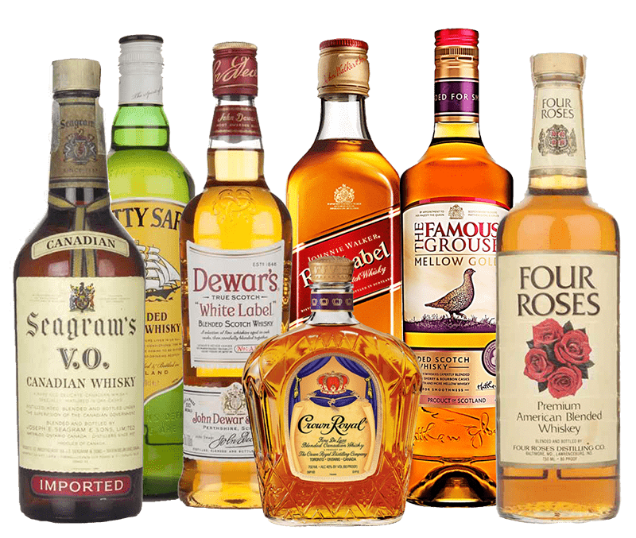

Виски — наименование крепкого алкогольного напитка, получаемого методом дистилляции зернового сусла на основе ячменя, пшеницы, ржи или кукурузы. Основные объемы виски производят в Шотландии, Ирландии, США и Канаде, известен также японский виски. У нас вы найдете огромный ассортимент солодового и купажированного виски превосходного качества.
